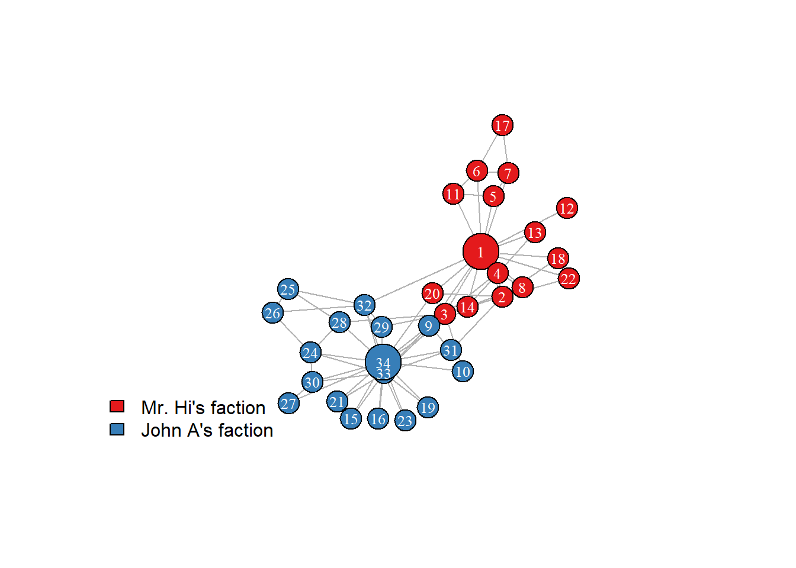
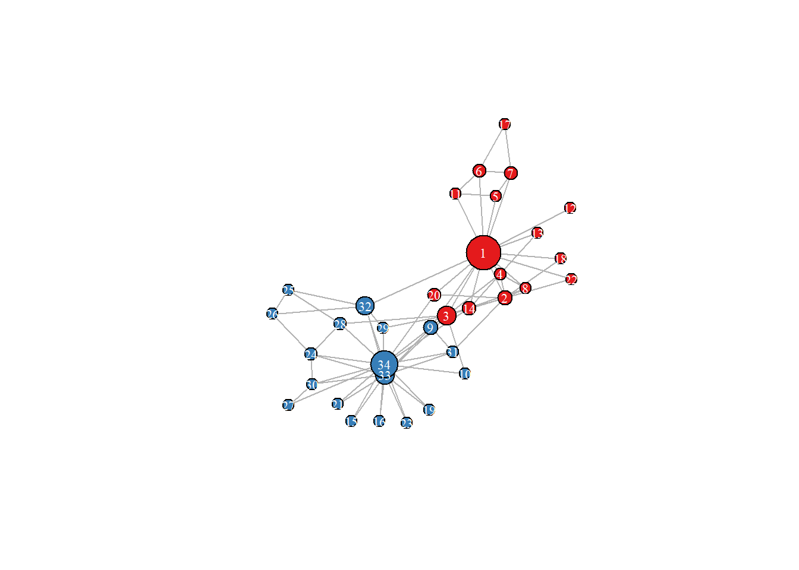
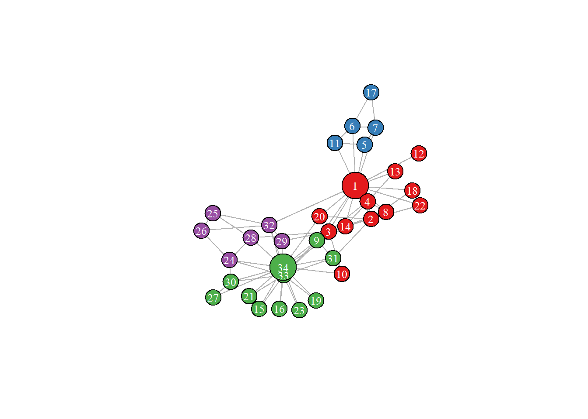
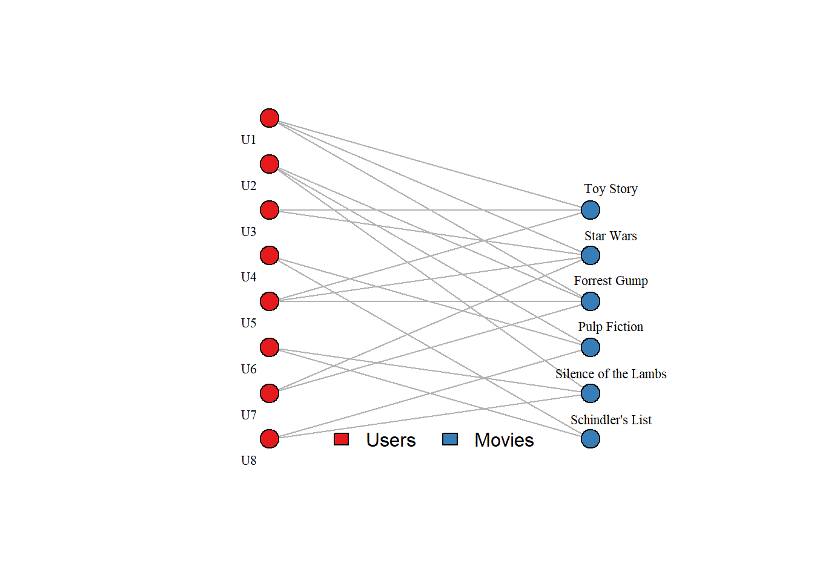
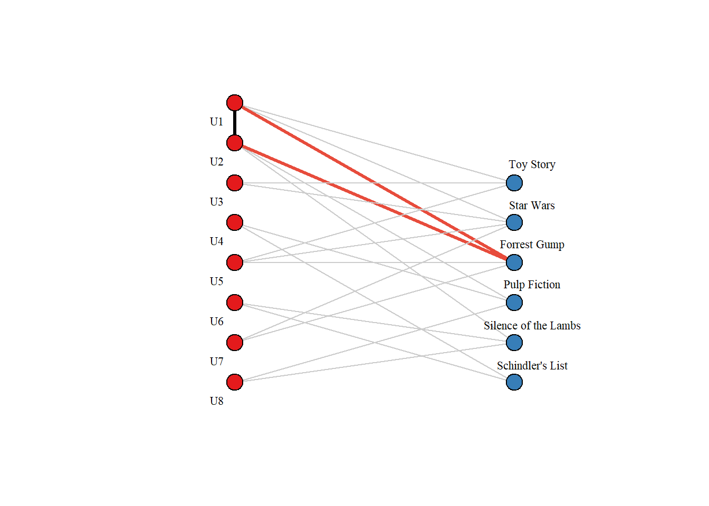
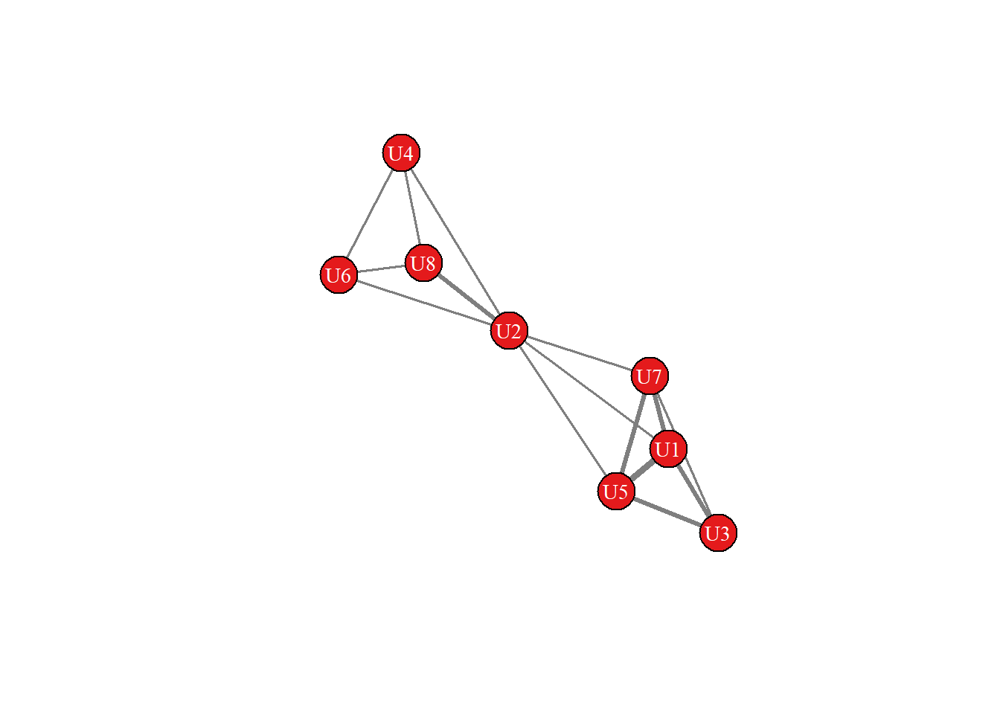
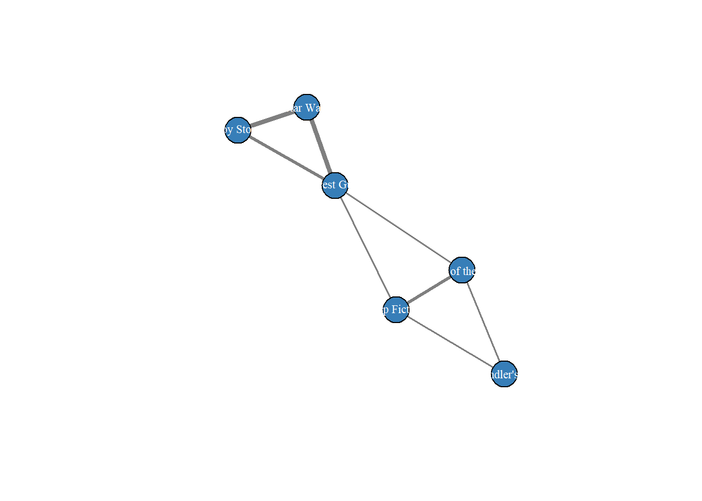
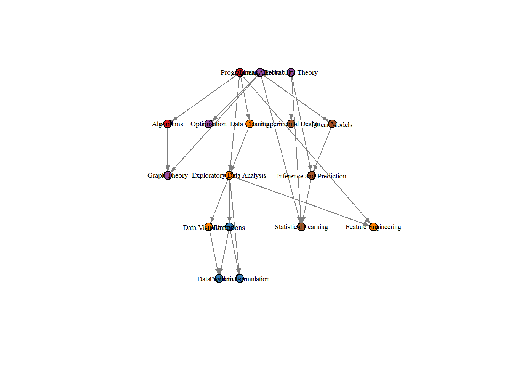
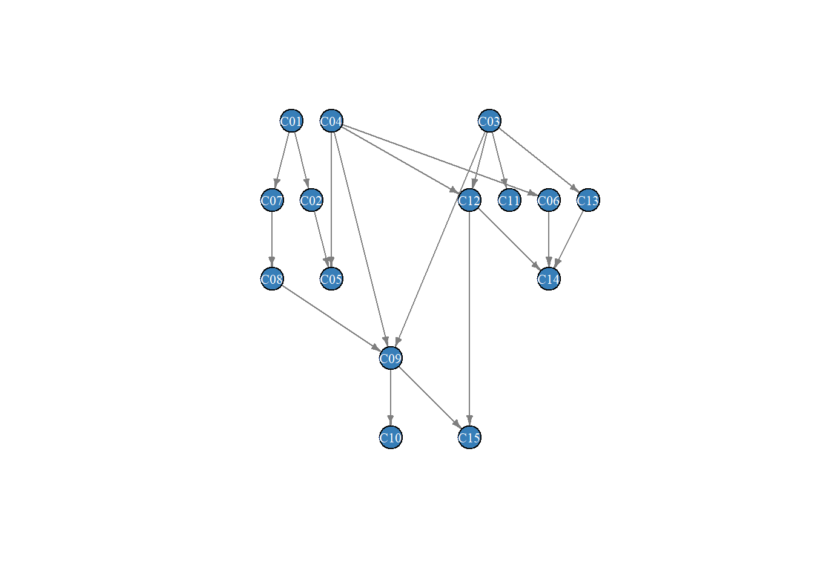

Show the code
library(here)
library(igraph)
library(knitr)
library(tidyverse)library(here)
library(igraph)
library(knitr)
library(tidyverse)library(eda4mlr)# stabilize simulated data
source(here::here("code", "eda4ml_set_seed.R"))In previous chapters we have seen that understanding and decision support are complementary: knowing why a pattern exists enables us to predict what will happen next. For network data this stereoscopic view of theory and application is especially useful.
Graphs arise whenever entities are connected: people linked by friendship, proteins linked by interaction, web pages linked by hyperlinks, concepts linked by semantic relationships. The mathematical abstraction is simple—nodes and edges—yet this structure appears across domains so diverse that graph theory has become a common language for network science, social science, biology, and machine learning.
The connections encoded in a graph are not merely data to be stored. They are information: information about influence, about similarity, about pathways and dependencies. The structure of a social network reveals who influences whom. The structure of a citation network reveals how ideas propagate. The structure of a prerequisite graph reveals what must be learned before what. To analyze a graph is to extract this information, to move from raw connectivity to insight.
Graph analysis serves two complementary aims:
Understanding: What structure exists? What communities or clusters are present? Which nodes are central or influential? How does information flow through the network?
Prediction: What will happen next? Which nodes will connect? What should we recommend? What is the shortest path from here to there?
These perspectives are not opposed. The same structural properties that reveal why a network behaves as it does also enable prediction of what it will do. Communities exist because people preferentially associate with others who are similar, a homophily that enables us to predict future connections. Nodes with high betweenness centrality control information flow and are more likely to broker new relationships.
This duality runs throughout graph analysis. We detect communities to understand social structure, and we use that structure to predict group behavior. We measure node similarity to understand relationships, and we use that similarity for recommendation. Structure is created by the forging of links between nodes, and is therefore predictive of new links.
We develop graph theory through three examples of increasing complexity:
| Example | Domain | Key Concepts |
|---|---|---|
| Zachary’s Karate Club | Social network | Community detection, centrality |
| MovieLens | Recommendations | Bipartite graphs, projection |
| LearningGraph | Knowledge graph | Typed nodes, DAGs, path queries |
Each example illuminates different aspects of graph structure and different analytical questions. The Karate Club shows how network topology predicts group behavior. MovieLens shows how bipartite structure enables recommendation. The LearningGraph shows how typed nodes and labeled edges enable richer reasoning about learning pathways.
This chapter proceeds as follows:
Examples first: We begin with data—social networks, recommendation systems, knowledge graphs—examining each from both structural and predictive perspectives. These examples build intuition for what graph analysis can reveal.
Fundamental concepts: We define the basic vocabulary: nodes, edges, directed and undirected graphs, weighted edges, paths, connectivity. We introduce matrix representations—adjacency, degree, Laplacian—that connect graph structure to linear algebra.
Measuring importance: We develop centrality measures that quantify which nodes matter. Different questions lead to different measures: degree centrality counts connections; betweenness centrality measures control of information flow; PageRank propagates importance through the network.
Finding structure: We examine community detection—algorithms that partition a graph into densely connected subgroups. Modularity provides a quality measure; spectral methods connect community structure to the eigenvectors of the graph Laplacian.
Graphs and machine learning: We show how graph structure becomes features for prediction tasks. Link prediction asks which unconnected nodes will connect; recommendation asks what to suggest based on network neighbors. We briefly introduce graph neural networks, which learn representations directly from graph structure.
Throughout, we maintain the dual perspective: structural analysis and prediction are two views of the same underlying reality.
In the early 1970s, sociologist Wayne Zachary spent two years observing a university karate club.1 He recorded who interacted with whom outside the formal club setting—who practiced together, who socialized, who sought each other out. The result was a social network of 34 members and 78 connections.
During Zachary’s observation period, a conflict arose between the club’s instructor (Mr. Hi, node 1) and its president (John A, node 34). The dispute escalated. Eventually, the club split into two factions—some members following Mr. Hi to form a new club, others remaining with John A.
Zachary had recorded the social network before the split occurred. This created a natural experiment: could the network structure predict which faction each member would join?
Figure 15.1 displays the Karate Club network. Node colors indicate the actual faction each member joined after the split—red for Mr. Hi’s group, blue for John A’s group. The two leaders are shown as larger nodes.
karate <- igraph::make_graph("Zachary")
# Set up node attributes
igraph::V(karate)$name <- 1:igraph::vcount(karate)
# Known faction membership (ground truth)
faction <- c(1,1,1,1,1,1,1,1,2,2,1,1,1,1,2,2,1,1,2,1,2,1,2,2,2,2,2,2,2,2,2,2,2,2)
igraph::V(karate)$faction <- faction
igraph::V(karate)$color <- ifelse(faction == 1, "#E41A1C", "#377EB8")
# Highlight the two leaders
igraph::V(karate)$size <- 15
igraph::V(karate)$size[1] <- 25
igraph::V(karate)$size[34] <- 25
set.seed(42)
plot(karate,
layout = igraph::layout_with_fr(karate),
vertex.label = igraph::V(karate)$name,
vertex.label.color = "white",
vertex.label.cex = 0.8,
edge.color = "gray70",
main = "")
legend("bottomleft",
legend = c("Mr. Hi's faction", "John A's faction"),
fill = c("#E41A1C", "#377EB8"),
bty = "n")
Visual inspection already suggests structure. The network separates into two densely connected regions with relatively few edges between them. Node 1 (Mr. Hi) and node 34 (John A) are clearly hubs of their respective groups. The social topology foreshadows the coming split.
Zachary’s result was striking: the network correctly predicted 33 of 34 members’ choices. The single “misclassified” member (node 9) had stronger ties to Mr. Hi’s group but followed a close friend to John A’s faction. Even this exception proves the rule—the prediction failed because of a social tie, just not the ones the algorithm counted.
The Karate Club raises a fundamental question: which nodes are important? Different notions of importance lead to different measures.
Degree centrality is the simplest: count the connections. A node with many edges is central in the sense of having many direct relationships. In the Karate Club, Mr. Hi (node 1) has degree 16—he interacts with nearly half the club members. John A (node 34) has degree 17.
But raw connection count may miss something. Consider node 3, who interacts with both leaders. The importance of this node may derive not from its number of connections, but because of where it sits in the network—bridging the two factions.
Betweenness centrality captures this idea. A node has high betweenness if it lies on many shortest paths between other nodes. Formally, for node \(v\):
\[ \gamma(v) = \sum_{s \neq v \neq t} \frac{\sigma_{st}(v)}{\sigma_{st}} \]
where \(\sigma_{st}\) is the number of shortest paths from node \(s\) to node \(t\), and \(\sigma_{st}(v)\) is the number of those paths that pass through \(v\). A node with high betweenness is a bridge—removing it would fragment the network or force information to take longer routes.
Figure 15.2 shows the Karate Club with nodes sized by betweenness centrality.
# Reset colors
igraph::V(karate)$color <- ifelse(faction == 1, "#E41A1C", "#377EB8")
# Size by betweenness
betw <- igraph::betweenness(karate, normalized = TRUE)
igraph::V(karate)$size <- 8 + 35 * betw
set.seed(42)
plot(karate,
layout = igraph::layout_with_fr(karate),
vertex.label = igraph::V(karate)$name,
vertex.label.color = "white",
vertex.label.cex = 0.7,
edge.color = "gray70",
main = "")
Mr. Hi has the highest betweenness. As the instructor, he connects to members who might not otherwise interact—beginners who come for lessons, advanced students who assist him, social members who attend club events. He is not just well-connected; he is a connector. John A, despite having slightly higher degree, has lower betweenness—his connections are more concentrated within his faction.
This distinction matters. When the club split, Mr. Hi’s bridging position meant that his departure fragmented more relationships than John A’s would have. Betweenness centrality identified this structural importance.
The visual structure of Figure 15.1 suggests two groups. Can an algorithm recover this partition without knowing the ground truth?
Community detection algorithms seek to partition a graph into subgroups that are internally dense and externally sparse. The intuition is that communities represent meaningful clusters—people who preferentially interact with each other, proteins that function together, web pages on related topics.
The Louvain algorithm is a widely used method that greedily optimizes modularity—a measure comparing the actual density of edges within groups to what would be expected in a random graph. High modularity indicates genuine community structure, not just arbitrary partitioning.
Figure 15.3 shows the communities detected by the Louvain algorithm.
# Reset size
igraph::V(karate)$size <- 15
igraph::V(karate)$size[1] <- 25
igraph::V(karate)$size[34] <- 25
# Detect communities
set.seed(42)
comm <- igraph::cluster_louvain(karate)
# Color by detected community
comm_colors <- c("#E41A1C", "#377EB8", "#4DAF4A", "#984EA3")
igraph::V(karate)$color <- comm_colors[igraph::membership(comm)]
set.seed(42)
plot(karate,
layout = igraph::layout_with_fr(karate),
vertex.label = igraph::V(karate)$name,
vertex.label.color = "white",
vertex.label.cex = 0.8,
edge.color = "gray70",
main = "")
The algorithm, knowing nothing about the dispute or its outcome, finds a partition closely matching the actual split. The modularity score is 0.419—well above the threshold of 0.3 typically indicating significant community structure.
This is not a coincidence. The algorithm detects communities because the network has community structure. People who are similar tend to associate with one another. The same homophily that created the dense within-group connections also predicted which faction members would join. The algorithm did not foresee the future; it revealed structure that was already present.
The Karate Club is a small example, but its lesson scales. The network structure that existed before the conflict predicted the outcome of the conflict—not because algorithms are clairvoyant, but because the topology encoded the social relationships that would determine people’s choices.
Our next example shifts from social networks to recommendations, and from a single graph to a bipartite structure connecting users and items.
The MovieLens dataset contains millions of movie ratings from thousands of users. 2 For our purposes, we use a small subset: 100 users, 20 movies, and 697 ratings on a 1–5 scale.
This data has a natural graph structure, but not the same kind we saw in the Karate Club. There, nodes were all of one type (people) and edges represented a single relationship (social interaction). Here, we have two distinct types of nodes—users and movies—and edges connect nodes of different types. A user rates a movie; movies do not rate each other; users do not rate users.
This is a bipartite graph: a graph whose nodes partition into two disjoint sets, with edges only between sets, never within.
Figure 15.4 shows a portion of the MovieLens bipartite graph. Users appear on the left, movies on the right. An edge connects user \(u\) to movie \(m\) if user \(u\) rated movie \(m\).
# Create a small example bipartite graph
set.seed(123)
# Sample users and movies for visualization
users <- paste0("U", 1:8)
movies <- c("Toy Story", "Pulp Fiction", "Forrest Gump", "Silence of the Lambs",
"Star Wars", "Schindler's List")
# Create edges (user-movie ratings)
edges <- tibble::tribble(
~user, ~movie,
"U1", "Toy Story",
"U1", "Star Wars",
"U1", "Forrest Gump",
"U2", "Pulp Fiction",
"U2", "Forrest Gump",
"U2", "Silence of the Lambs",
"U3", "Toy Story",
"U3", "Star Wars",
"U4", "Pulp Fiction",
"U4", "Schindler's List",
"U5", "Toy Story",
"U5", "Forrest Gump",
"U5", "Star Wars",
"U6", "Silence of the Lambs",
"U6", "Schindler's List",
"U7", "Star Wars",
"U7", "Forrest Gump",
"U8", "Pulp Fiction",
"U8", "Silence of the Lambs"
)
# Build bipartite graph
g_bip <- igraph::graph_from_data_frame(edges, directed = FALSE)
# Set node types
igraph::V(g_bip)$type <- igraph::V(g_bip)$name %in% movies
# Layout: users on left, movies on right
coords <- matrix(0, nrow = igraph::vcount(g_bip), ncol = 2)
user_nodes <- which(!igraph::V(g_bip)$type)
movie_nodes <- which(igraph::V(g_bip)$type)
coords[user_nodes, 1] <- 0
coords[user_nodes, 2] <- seq(length(user_nodes), 1, length.out = length(user_nodes))
coords[movie_nodes, 1] <- 2
coords[movie_nodes, 2] <- seq(length(movie_nodes), 1, length.out = length(movie_nodes))
# Colors
igraph::V(g_bip)$color <- ifelse(igraph::V(g_bip)$type, "#377EB8", "#E41A1C")
plot(g_bip,
layout = coords,
vertex.size = 12,
vertex.label.cex = 0.7,
vertex.label.color = "black",
vertex.label.dist = ifelse(igraph::V(g_bip)$type, 2.5, -2.5),
edge.color = "gray70",
main = "")
legend("bottom",
legend = c("Users", "Movies"),
fill = c("#E41A1C", "#377EB8"),
horiz = TRUE,
bty = "n")
The bipartite structure immediately suggests a recommendation strategy. If user U1 and user U3 have both watched Toy Story and Star Wars, they may have similar tastes. If U3 has also watched a movie that U1 hasn’t seen, that movie becomes a candidate recommendation for U1. The graph encodes a path: U1 → shared movie → U3 → candidate movie.
This is collaborative filtering expressed as graph traversal: find users similar to you (connected through shared items), then recommend items those similar users have chosen.
The bipartite graph contains all the information, but reasoning about user similarity is easier in a different representation. We can project the bipartite graph onto one of its node types.
The user projection creates a new graph containing only user nodes. Two users are connected in the projection if they share at least one movie in the original bipartite graph. The edge weight can reflect how many movies they share—more shared movies implies stronger similarity.
Figure 15.5 illustrates this transformation.
# Show the bipartite graph with highlighted shared rating and projected edge
g_bip2 <- igraph::graph_from_data_frame(edges, directed = FALSE)
igraph::V(g_bip2)$type <- igraph::V(g_bip2)$name %in% movies
# Add the projected edge directly to the graph
g_bip2 <- igraph::add_edges(g_bip2, c("U1", "U2"))
# Identify edge types
edge_list <- igraph::as_edgelist(g_bip2)
n_edges <- igraph::ecount(g_bip2)
edge_colors <- rep("gray80", n_edges)
edge_widths <- rep(1, n_edges)
edge_lty <- rep(1, n_edges)
# Highlight U1-Forrest Gump and U2-Forrest Gump
for (i in 1:(n_edges - 1)) {
e1 <- edge_list[i, 1]
e2 <- edge_list[i, 2]
is_u1_fg <- (e1 == "U1" & e2 == "Forrest Gump") | (e1 == "Forrest Gump" & e2 == "U1")
is_u2_fg <- (e1 == "U2" & e2 == "Forrest Gump") | (e1 == "Forrest Gump" & e2 == "U2")
if (is_u1_fg | is_u2_fg) {
edge_colors[i] <- "#E74C3C"
edge_widths[i] <- 3
}
}
# Style the projected edge (last edge added)
edge_colors[n_edges] <- "black"
edge_widths[n_edges] <- 3
edge_lty[n_edges] <- 1
# Node colors
igraph::V(g_bip2)$color <- ifelse(igraph::V(g_bip2)$type, "#377EB8", "#E41A1C")
# Layout: users on left, movies on right
layout_coords <- matrix(0, nrow = igraph::vcount(g_bip2), ncol = 2)
user_nodes2 <- which(!igraph::V(g_bip2)$type)
movie_nodes2 <- which(igraph::V(g_bip2)$type)
layout_coords[user_nodes2, 1] <- 0
layout_coords[user_nodes2, 2] <- seq(length(user_nodes2), 1, length.out = length(user_nodes2))
layout_coords[movie_nodes2, 1] <- 2
layout_coords[movie_nodes2, 2] <- seq(length(movie_nodes2), 1, length.out = length(movie_nodes2))
# Plot
plot(g_bip2,
layout = layout_coords,
vertex.size = 12,
vertex.label.cex = 0.7,
vertex.label.color = "black",
vertex.label.dist = ifelse(igraph::V(g_bip2)$type, 2.5, -2.5),
edge.color = edge_colors,
edge.width = edge_widths,
edge.lty = edge_lty,
main = "")
In the bipartite graph, U1 and U2 are not directly connected—users never connect to users. But both rated Forrest Gump (shown in red). The projection creates an edge between them (black line), representing their shared taste.
Figure 15.6 shows the complete user projection for our example.
# Create user projection from the original bipartite graph (not g_bip2)
g_user_proj <- igraph::bipartite_projection(g_bip, which = "false")
# Edge weights = number of shared movies (already computed by projection)
edge_weights <- igraph::E(g_user_proj)$weight
igraph::V(g_user_proj)$color <- "#E41A1C"
set.seed(42)
plot(g_user_proj,
layout = igraph::layout_with_fr(g_user_proj),
vertex.size = 20,
vertex.label.cex = 0.9,
vertex.label.color = "white",
edge.width = edge_weights * 1.5,
edge.color = "gray50",
main = "")
The projection transforms a bipartite user-item graph into a user-user similarity network. Users who share many movies are strongly connected; users with no overlap are disconnected. This is the same structure we analyzed in the Karate Club—but derived from behavioral data rather than observed directly.
The user projection enables a simple recommendation algorithm:
This is user-based collaborative filtering expressed as graph operations. The projection makes explicit the similarity relationships implicit in the bipartite structure.
We can equally well project onto movies rather than users. The movie projection connects movies that share viewers. Two movies watched by the same users are likely similar in some way—genre, tone, appeal to a particular audience. This yields item-based collaborative filtering: given a movie the user liked, recommend movies connected to it in the movie projection.
# Create movie projection
g_movie_proj <- igraph::bipartite_projection(g_bip, which = "true")
igraph::V(g_movie_proj)$color <- "#377EB8"
set.seed(42)
plot(g_movie_proj,
layout = igraph::layout_with_fr(g_movie_proj),
vertex.size = 20,
vertex.label.cex = 0.7,
vertex.label.color = "white",
edge.width = igraph::E(g_movie_proj)$weight * 1.5,
edge.color = "gray50",
main = "")
The MovieLens example illustrates how different graph representations serve different purposes:
| Representation | Nodes | Edges | Best For |
|---|---|---|---|
| Bipartite | Users + Movies | Ratings | Complete information, rating prediction |
| User projection | Users | Shared movies | Finding similar users |
| Movie projection | Movies | Shared viewers | Finding similar movies |
All three representations contain the same underlying information—the bipartite structure can be reconstructed from either projection plus the original edges. But each view makes certain analyses natural. The bipartite graph shows what happened; the projections show similarity patterns that support recommendation.
This flexibility is characteristic of graph analysis. The same data can be represented in multiple ways, each illuminating different aspects of the structure.
Our next example moves from implicit structure (ratings that imply similarity) to explicit structure (typed nodes, labeled edges, declared relationships). Knowledge graphs make the semantics of connections explicit, enabling richer reasoning.
The Karate Club and MovieLens examples used graphs with simple structure: nodes of one or two types, edges representing a single relationship. Many real-world applications require richer representations. A knowledge graph extends the basic graph model with multiple node types, labeled edge types, and properties attached to both nodes and edges.
The LearningGraph is a knowledge graph for skills-based learning in data science.3 It represents the relationships among skills, courses, learners, work roles, and competency areas. Unlike the Karate Club (where all nodes are people) or MovieLens (users and movies), the LearningGraph has five distinct node types and five edge types, each with specific semantics.
Table 15.1 summarizes the LearningGraph structure. 4
lg_structure <- tibble::tribble(
~Component, ~Count, ~Description,
"Skills", 18L, "Knowledge and skill areas (KSAs) from the data science competency framework",
"Courses", 15L, "Courses that teach skills, with prerequisites",
"Learners", 6L, "Fictional learner profiles with current skill levels",
"Work Roles", 3L, "Data Analyst, Data Scientist, AI/ML Specialist",
"Competencies", 7L, "Competency areas grouping related skills",
"has_skill", 41L, "Learner → Skill edges with proficiency level",
"requires_skill", 25L, "Work Role → Skill edges with required proficiency",
"prerequisite", 22L, "Skill → Skill conceptual dependencies",
"course_prereq", 19L, "Course → Course curricular ordering",
"teaches", 19L, "Course → Skill with proficiency ceiling"
)
knitr::kable(lg_structure, align = c("l", "r", "l"))| Component | Count | Description |
|---|---|---|
| Skills | 18 | Knowledge and skill areas (KSAs) from the data science competency framework |
| Courses | 15 | Courses that teach skills, with prerequisites |
| Learners | 6 | Fictional learner profiles with current skill levels |
| Work Roles | 3 | Data Analyst, Data Scientist, AI/ML Specialist |
| Competencies | 7 | Competency areas grouping related skills |
| has_skill | 41 | Learner → Skill edges with proficiency level |
| requires_skill | 25 | Work Role → Skill edges with required proficiency |
| prerequisite | 22 | Skill → Skill conceptual dependencies |
| course_prereq | 19 | Course → Course curricular ordering |
| teaches | 19 | Course → Skill with proficiency ceiling |
This schema addresses questions that simpler graphs cannot:
The 18 skills span mathematical foundations (probability, linear algebra, optimization), statistical methods (linear models, inference, experimental design), data analysis (EDA, visualization, feature engineering), and collaboration (problem formulation, data narratives). Each skill belongs to one of seven competency areas.
Skills have conceptual prerequisites: understanding linear algebra helps with optimization; probability theory underlies inference. These dependencies form a directed acyclic graph (DAG)—a graph with directed edges and no cycles.
Figure 15.8 shows the skill prerequisite structure.
# Build skill prerequisite graph
prereq_edges <- learning_graph$edges$prerequisite |>
dplyr::left_join(
learning_graph$nodes$skills |> dplyr::select(skill_id, skill_name),
by = c("skill_from_id" = "skill_id")
) |>
dplyr::rename(from = skill_name) |>
dplyr::left_join(
learning_graph$nodes$skills |> dplyr::select(skill_id, skill_name),
by = c("skill_to_id" = "skill_id")
) |>
dplyr::rename(to = skill_name) |>
dplyr::select(from, to)
g_prereq <- igraph::graph_from_data_frame(prereq_edges, directed = TRUE)
# Color by competency
skill_info <- learning_graph$nodes$skills |>
dplyr::left_join(
learning_graph$nodes$competencies |> dplyr::select(cmp_id, cmp_abbrev),
by = "cmp_id"
)
cmp_colors <- c(
"Computation" = "#E41A1C",
"Collaboration" = "#377EB8",
"Data Engineering" = "#4DAF4A",
"Math" = "#984EA3",
"Analysis" = "#FF7F00",
"Statistics" = "#A65628"
)
node_colors <- skill_info$cmp_abbrev[match(igraph::V(g_prereq)$name, skill_info$skill_name)]
igraph::V(g_prereq)$color <- cmp_colors[node_colors]
set.seed(42)
plot(g_prereq,
layout = igraph::layout_with_sugiyama(g_prereq)$layout,
vertex.size = 8,
vertex.label.cex = 0.6,
vertex.label.color = "black",
edge.arrow.size = 0.4,
edge.color = "gray50",
main = "")
The DAG structure is essential. Because there are no cycles, skills can be topologically sorted—arranged so that every prerequisite comes before the skills that depend on it. This ordering defines valid learning sequences.
The 15 courses provide complete coverage of all 18 skills. Each course teaches one to three skills and has its own prerequisites—not at the skill level, but at the course level. You must take Linear Algebra (C04) before Optimization Methods (C06), not because “linear algebra” the skill is prerequisite to “optimization” the skill (though it is), but because the courses are designed that way.
Figure 15.9 shows the course prerequisite DAG.
# Build course prerequisite graph
course_prereq_edges <- learning_graph$edges$course_prereq |>
dplyr::left_join(
learning_graph$nodes$courses |> dplyr::select(course_id, course_tag, course_name),
by = c("course_from_id" = "course_id")
) |>
dplyr::rename(from = course_tag, from_name = course_name) |>
dplyr::left_join(
learning_graph$nodes$courses |> dplyr::select(course_id, course_tag, course_name),
by = c("course_to_id" = "course_id")
) |>
dplyr::rename(to = course_tag, to_name = course_name) |>
dplyr::select(from, to)
g_course <- igraph::graph_from_data_frame(course_prereq_edges, directed = TRUE)
# Add course names as labels
course_lookup <- learning_graph$nodes$courses |>
dplyr::select(course_tag, course_name)
igraph::V(g_course)$label <- igraph::V(g_course)$name
set.seed(123)
plot(g_course,
layout = igraph::layout_with_sugiyama(g_course)$layout,
vertex.size = 15,
vertex.label.cex = 0.7,
vertex.label.color = "white",
vertex.color = "#377EB8",
edge.arrow.size = 0.4,
edge.color = "gray50",
main = "")
Three courses have no prerequisites and serve as entry points: C01 (Introduction to Programming), C03 (Probability Theory), and C04 (Linear Algebra). From these foundations, learners progress through intermediate courses to capstone courses like C14 (Statistical Learning) and C15 (Data Science Communication).
This dual prerequisite structure—skills and courses—reflects a real distinction. Skill prerequisites are conceptual: you need probability to understand inference. Course prerequisites are practical: the instructor assumes you’ve seen certain material. The two structures are related but not identical, because courses bundle skills in ways that don’t perfectly mirror the skill DAG.
A learner has a skill profile: a set of skills at various proficiency levels. A work role has requirements: skills needed at minimum proficiency levels. The gap between profile and requirements identifies what the learner needs to develop.
Table 15.2 shows a gap analysis for Alice, a math major, against the Data Scientist role requirements.
# Alice's skills
alice_skills <- learning_graph$edges$has_skill |>
dplyr::filter(learner_id == 1) |>
dplyr::left_join(
learning_graph$nodes$skills |> dplyr::select(skill_id, skill_name),
by = "skill_id"
) |>
dplyr::select(skill_name, current = proficiency)
# Data Scientist requirements
dsci_reqs <- learning_graph$edges$requires_skill |>
dplyr::filter(role_id == 2) |>
dplyr::left_join(
learning_graph$nodes$skills |> dplyr::select(skill_id, skill_name),
by = "skill_id"
) |>
dplyr::select(skill_name, required = required_proficiency)
# Join and compute gap
gap_analysis <- dsci_reqs |>
dplyr::left_join(alice_skills, by = "skill_name") |>
dplyr::mutate(
current = tidyr::replace_na(current, 0L),
gap = required - current
) |>
dplyr::filter(gap > 0) |>
dplyr::arrange(dplyr::desc(gap)) |>
dplyr::select(Skill = skill_name, Required = required, Current = current, Gap = gap)
knitr::kable(gap_analysis, align = c("l", "c", "c", "c"))| Skill | Required | Current | Gap |
|---|---|---|---|
| Exploratory Data Analysis | 3 | 1 | 2 |
| Inference and Prediction | 2 | 0 | 2 |
| Statistical Learning | 2 | 0 | 2 |
| Feature Engineering | 2 | 0 | 2 |
| Problem Formulation | 2 | 0 | 2 |
| Data Narratives | 2 | 0 | 2 |
| Limitations | 2 | 0 | 2 |
| Programming | 2 | 1 | 1 |
Alice has strong mathematical foundations but gaps in applied skills. She needs to develop programming, data narratives, feature engineering, and several other competencies to qualify as a Data Scientist. The gap analysis quantifies the distance between where she is and where she needs to be.
A learning path answers the question: given my current skills, what is the shortest route to a target skill?
This question sounds simple, but it requires care. A naive approach would find the shortest path in the skill prerequisite graph. But Alice already has some skills—she doesn’t need to traverse the entire graph. Her learning path should account for her starting position.
The algorithm works as follows:
Table 15.3 shows Alice’s learning path to Statistical Learning.
# This would normally call lg_learning_path() but we'll compute directly here
# Alice has: probability_theory (3), linear_algebra (3), optimization (2),
# programming (1), EDA (1), linear_models (2)
# Prerequisites for statistical_learning (skill 18):
# - linear_algebra (8) -> statistical_learning (18)
# - probability_theory (7) -> statistical_learning (18)
# - inference_prediction (17) -> statistical_learning (18)
# - linear_models (16) -> inference_prediction (17)
# - linear_algebra (8) -> linear_models (16)
# - probability_theory (7) -> ... (already covered)
# Alice needs: inference_prediction (she has linear_models at 2, needs more)
# Actually let's trace what she's missing for statistical_learning
# Skills Alice has (by id): 7, 8, 10, 2, 12, 16
alice_skill_ids <- c(7, 8, 10, 2, 12, 16)
# For statistical_learning, prerequisites are:
# 8 (linear_algebra) - Alice has
# 7 (probability_theory) - Alice has
# 17 (inference_prediction) - Alice doesn't have
# For inference_prediction, prerequisites are:
# 7 (probability_theory) - Alice has
# 16 (linear_models) - Alice has
# So Alice needs: inference_prediction, then statistical_learning
learning_path <- tibble::tribble(
~Step, ~Skill, ~Rationale,
1L, "Inference and Prediction", "Prerequisite for Statistical Learning; requires Linear Models (which Alice has)",
2L, "Statistical Learning", "Target skill; requires Inference and Prediction"
)
knitr::kable(learning_path, align = c("c", "l", "l"))| Step | Skill | Rationale |
|---|---|---|
| 1 | Inference and Prediction | Prerequisite for Statistical Learning; requires Linear Models (which Alice has) |
| 2 | Statistical Learning | Target skill; requires Inference and Prediction |
Alice’s path is short because she already has strong foundations. A computer science major like Charlie, with different starting skills, would face a different path to the same target. Learning paths are properties of learner-skill pairs, not skills alone.
The LearningGraph contains six learner profiles with different backgrounds:
learner_summary <- learning_graph$nodes$learners |>
dplyr::select(Name = name, Role = role, Organization = organization, Background = background)
knitr::kable(learner_summary, align = c("l", "l", "l", "l"))| Name | Role | Organization | Background |
|---|---|---|---|
| Alice | student | Xavier U | Math major, junior year |
| Beth | employee | DataCorp | Senior analyst, 5 years experience |
| Charlie | student | Xavier U | CS major, senior year |
| Dan | student | Xavier U | Statistics minor, interested in ML |
| Elliot | employee | DataCorp | Junior data engineer, 1 year |
| Fiona | employee | DataCorp | Mid-level data scientist, 3 years |
Each learner has a different skill profile, and therefore a different learning path to any given target. Beth, a senior analyst with strong applied skills, might need mathematical foundations. Charlie, a CS major, might need statistical training. The prerequisite DAG is fixed; each learner’s position on it varies.
This is the practical value of the knowledge graph representation. By encoding skills, proficiencies, prerequisites, and requirements in a graph structure, we can compute personalized recommendations. The graph doesn’t just store information—it enables reasoning about learning.
The examples above introduced graph concepts informally. We now define them precisely.
A graph \(G = (V, E)\) consists of a set of nodes (or vertices) \(V\) and a set of edges \(E\). Each edge connects two nodes. In an undirected graph, an edge between nodes \(u\) and \(v\) is symmetric: if \(u\) connects to \(v\), then \(v\) connects to \(u\). In a directed graph, edges have direction: an edge from \(u\) to \(v\) does not imply an edge from \(v\) to \(u\).
The Karate Club is an undirected graph—friendship is mutual. The skill prerequisite graph is directed—“probability is prerequisite to inference” does not imply the reverse. The MovieLens bipartite graph is undirected—a rating connects user (rater) and movie (rated) symmetrically.
An edge may carry a weight—a numerical value representing strength, distance, or capacity. In the user projection, edge weights count shared movies. In a transportation network, weights might represent travel time. In the LearningGraph, the has_skill edges carry proficiency levels as weights.
A path from node \(u\) to node \(v\) is a sequence of edges connecting them. The length of a path is the number of edges (or, for weighted graphs, the sum of edge weights). A shortest path minimizes this length.
Two nodes are connected if a path exists between them. A graph is connected if every pair of nodes is connected. A connected component is a maximal connected subgraph—a piece of the graph where all nodes connect to each other but not to nodes outside the piece.
A directed acyclic graph (DAG) is a directed graph with no cycles—no path leads from a node back to itself. DAGs arise naturally in dependency structures: prerequisites, causation, temporal ordering. The key property of a DAG is that its nodes can be topologically sorted—arranged in a linear order where every edge points forward.
Both the skill prerequisite graph and the course prerequisite graph are DAGs. This is not coincidental; cycles in prerequisites would be incoherent (“you need A before B and B before A”).
Graphs can be represented as matrices, connecting graph theory to linear algebra.
The adjacency matrix \(A\) is an \(n \times n\) matrix where \(n = |V|\) is the number of nodes. Entry \(A_{ij} = 1\) if there is an edge from node \(i\) to node \(j\), and \(A_{ij} = 0\) otherwise. For undirected graphs, \(A\) is symmetric. For weighted graphs, \(A_{ij}\) holds the edge weight instead of 1.
The degree matrix \(D\) is a diagonal matrix where \(D_{ii}\) equals the degree of node \(i\)—the number of edges incident to it. For directed graphs, we distinguish in-degree (incoming edges) and out-degree (outgoing edges).
The Laplacian matrix \(L = D - A\) combines adjacency and degree information. The Laplacian has remarkable properties: its eigenvalues and eigenvectors reveal graph structure. We will use the Laplacian for spectral clustering in the section on community detection.
Which nodes matter most? The answer depends on what “important” means. Different centrality measures capture different notions of importance.
The simplest measure: count the connections. A node’s degree centrality is its degree—the number of edges incident to it. In the Karate Club, Mr. Hi and John A have the highest degrees.
For directed graphs, we distinguish in-degree centrality (how many edges point to the node) and out-degree centrality (how many edges point from it). A web page with high in-degree is linked by many other pages; a page with high out-degree links to many others.
Degree centrality is local—it considers only immediate neighbors. A node could have few connections but occupy a strategic position in the network.
Betweenness centrality measures how often a node lies on shortest paths between other nodes. For node \(v\):
\[ \gamma(v) = \sum_{s \neq v \neq t} \frac{\sigma_{st}(v)}{\sigma_{st}} \]
where \(\sigma_{st}\) is the number of shortest paths from \(s\) to \(t\), and \(\sigma_{st}(v)\) is the number that pass through \(v\).
High betweenness indicates a broker or bridge—a node that controls flow between other parts of the network. In the Karate Club, Mr. Hi’s high betweenness reflected his role connecting different subgroups.
Closeness centrality measures how quickly a node can reach all others. It is the inverse of the average shortest path distance from the node to all other nodes:
\[ c(v) = \frac{n - 1}{\sum_{u \neq v} d(v, u)} \]
where \(d(v, u)\) is the shortest path length from \(v\) to \(u\), and \(n\) is the number of nodes.
A node with high closeness can efficiently disseminate information—it is “close” to everyone in the network.
PageRank, developed for ranking web pages, measures importance recursively: a node is important if important nodes point to it. The algorithm simulates a random walk on the graph, where a walker follows edges with probability \((1 - \epsilon)\) and jumps to a random node with probability \(\epsilon\).
The stationary distribution of this walk defines PageRank scores. Nodes that attract many random walkers—by having many incoming edges, especially from other high-PageRank nodes—receive high scores.
PageRank differs from degree centrality by considering the quality of connections, not just quantity. A link from a major hub counts more than a link from a peripheral node.
Many real networks have community structure—groups of nodes that are densely connected internally but sparsely connected to other groups. The Karate Club had two communities corresponding to the eventual factions. Social networks cluster by interest groups, friend circles, or organizations. Biological networks cluster by functional modules.
How do we know if a partition into communities is good? Modularity compares the actual number of within-community edges to the expected number in a random graph with the same degree sequence:
\[ Q = \frac{1}{2m} \sum_{ij} \left( A_{ij} - \frac{k_i k_j}{2m} \right) \delta(c_i, c_j) \]
where \(m\) is the total number of edges, \(k_i\) is the degree of node \(i\), \(c_i\) is the community assignment of node \(i\), and \(\delta(c_i, c_j) \in \{0, 1 \}\) indicates whether nodes \(i\) and \(j\) are in the same community.
Modularity ranges from \(-0.5\) to \(1\). Values above \(0.3\) typically indicate significant community structure. The Karate Club partition achieved modularity around \(0.4\).
The Louvain algorithm greedily optimizes modularity. It starts with each node in its own community, then iteratively moves nodes to neighboring communities if doing so increases modularity. Once no improvement is possible, it aggregates communities into super-nodes and repeats. The algorithm is fast and scales to large networks.
Spectral clustering uses the eigenvectors of the graph Laplacian. The Laplacian’s second smallest eigenvalue (the Fiedler value) measures how easily the graph can be cut into two pieces. The corresponding eigenvector (the Fiedler vector) provides a continuous relaxation of the optimal cut—nodes can be partitioned based on the sign or value of their Fiedler vector entries. 5
The connection between graph cuts and eigenvectors is deep. It links community detection to the spectral theory we developed for PCA and dimensionality reduction in earlier chapters.
Community detection is not merely descriptive. In the Karate Club, detected communities predicted faction membership. In social networks, communities predict information spread—ideas propagate within communities more easily than between them. In biological networks, proteins in the same community often participate in the same biological processes.
This predictive power follows from the same principle we have seen throughout: structure reflects process. Communities exist because of preferential attachment, homophily, or functional interaction. The same processes that created the communities will shape future behavior.
Graph structure provides features for machine learning tasks. We briefly survey three directions.
Given a graph observed at time \(t\), which edges will appear at time \(t + 1\)? Link prediction uses structural features to forecast new connections.
Simple predictors include:
These predictors work because of homophily and transitivity: friends of friends tend to become friends.
Given labels for some nodes, predict labels for others. In a social network, if some users are labeled as interested in a topic, which other users share that interest?
Graph structure provides features: a node’s neighbors’ labels, its centrality measures, its community membership. More sophisticated approaches propagate labels through the network or learn node embeddings that capture structural similarity.
Graph neural networks (GNNs) learn node representations directly from graph structure. The key idea is message passing: each node aggregates information from its neighbors, then updates its own representation. Stacking multiple layers allows information to propagate across longer distances.
GNNs have achieved strong results on molecular property prediction, social network analysis, and recommendation systems. They represent a synthesis of graph theory and deep learning—using neural networks to learn the features that graph analysis traditionally handcrafted.
The igraph package provides a comprehensive toolkit for graph analysis in R. This section consolidates the key computational patterns used throughout the chapter.
The examples in this chapter use the igraph package for graph analysis and igraphdata for built-in datasets. The LearningGraph example uses the eda4mlr package.
# Install from CRAN
install.packages("igraph")
install.packages("igraphdata")
# Install eda4mlr from GitHub
# install.packages("remotes")
remotes::install_github("tthrall/eda4mlr")Graphs can be constructed from edge lists, adjacency matrices, or built-in datasets.
# From a built-in dataset
karate <- igraph::make_graph("Zachary")
# From an edge list (data frame with 'from' and 'to' columns)
edge_df <- data.frame(
from = c("A", "A", "B", "C"),
to = c("B", "C", "C", "D")
)
g <- igraph::graph_from_data_frame(edge_df, directed = FALSE)
# From an adjacency matrix
adj_matrix <- matrix(c(0,1,1,0, 1,0,1,0, 1,1,0,1, 0,0,1,0), nrow = 4)
rownames(adj_matrix) <- colnames(adj_matrix) <- c("A", "B", "C", "D")
g <- igraph::graph_from_adjacency_matrix(adj_matrix, mode = "undirected")# Number of nodes and edges
igraph::vcount(karate)
igraph::ecount(karate)
# Access nodes and edges
igraph::V(karate) # All vertices
igraph::E(karate) # All edges
igraph::V(karate)$name # Vertex names (if assigned)
# Graph type
igraph::is_directed(karate)
igraph::is_weighted(karate)
igraph::is_connected(karate)The four centrality measures discussed in this chapter each answer a different question about node importance.
# Degree: How many connections?
igraph::degree(karate)
igraph::degree(karate, v = 1) # Specific node
# Betweenness: How often on shortest paths?
igraph::betweenness(karate)
igraph::betweenness(karate, normalized = TRUE) # Scale to [0, 1]
# Closeness: How quickly can this node reach others?
igraph::closeness(karate)
# PageRank: Importance via random walk
igraph::page_rank(karate)$vector# Louvain algorithm (fast, greedy modularity optimization)
comm_louvain <- igraph::cluster_louvain(karate)
# Walktrap algorithm (based on random walks)
comm_walktrap <- igraph::cluster_walktrap(karate)
# Extract results
igraph::membership(comm_louvain) # Community assignment per node
igraph::modularity(comm_louvain) # Quality score
length(comm_louvain) # Number of communities detected# Shortest path between two nodes
igraph::shortest_paths(karate, from = 1, to = 34)$vpath
# All shortest path lengths from a node
igraph::distances(karate, v = 1)
# Diameter (longest shortest path)
igraph::diameter(karate)
# For DAGs: topological sort
g_dag <- igraph::make_graph(~ A-+B, A-+C, B-+D, C-+D)
igraph::topo_sort(g_dag)# Create a bipartite graph
# type = FALSE for one set (e.g., users), TRUE for other (e.g., movies)
edges <- data.frame(
user = c("U1", "U1", "U2", "U2", "U3"),
movie = c("M1", "M2", "M2", "M3", "M1")
)
g_bip <- igraph::graph_from_data_frame(edges, directed = FALSE)
igraph::V(g_bip)$type <- igraph::V(g_bip)$name %in% edges$movie
# Project onto one node type
# which = "false" projects onto type=FALSE nodes (users)
# which = "true" projects onto type=TRUE nodes (movies)
user_proj <- igraph::bipartite_projection(g_bip, which = "false")
movie_proj <- igraph::bipartite_projection(g_bip, which = "true")
# Edge weights in projection = number of shared neighbors
igraph::E(user_proj)$weightFor machine learning tasks, we often need to convert graph structure into a feature matrix with one row per node.
# Load the Karate Club
karate <- igraph::make_graph("Zachary")
# Build feature matrix
node_features <- tibble::tibble(
node = 1:igraph::vcount(karate),
degree = igraph::degree(karate),
betweenness = igraph::betweenness(karate, normalized = TRUE),
closeness = igraph::closeness(karate),
pagerank = igraph::page_rank(karate)$vector
)
# Preview
node_features |> print(n = 6)# A tibble: 34 × 5
node degree betweenness closeness pagerank
<int> <dbl> <dbl> <dbl> <dbl>
1 1 16 0.438 0.0172 0.0970
2 2 9 0.0539 0.0147 0.0529
3 3 10 0.144 0.0169 0.0571
4 4 6 0.0119 0.0141 0.0359
5 5 3 0.000631 0.0115 0.0220
6 6 4 0.0300 0.0116 0.0291
# ℹ 28 more rowsThis feature matrix can be joined with node labels (e.g., faction membership) for supervised learning, or used directly for clustering or anomaly detection.
Graphs provide a natural representation for relational data: social connections, interactions, dependencies, similarities. The key concepts are simple—nodes and edges—but support rich analysis.
What we covered:
Three examples: The Karate Club showed community detection and centrality. MovieLens showed bipartite structure and projection for recommendation. The LearningGraph showed typed nodes, DAGs, and path-based reasoning.
Fundamental concepts: Directed and undirected graphs, weighted edges, paths and connectivity, DAGs, matrix representations.
Centrality measures: Degree, betweenness, closeness, PageRank—different notions of importance for different questions.
Community detection: Modularity as a quality measure, Louvain and spectral methods for finding communities.
Machine learning connections: Link prediction, node classification, graph neural networks.
The unifying theme: Graph structure encodes relationships that were created by real processes—social dynamics, information flow, logical dependencies. Analyzing that structure reveals those processes and enables prediction of future behavior. The same graph that helps us understand why a network looks the way it does also helps us predict what it will do next.
Connections to earlier chapters: Matrix representations connect to linear algebra (Part 2). Spectral methods connect to eigenvalue decomposition and PCA (Chapter 8). Random walks connect to probability (Chapter 2). The LearningGraph draws on topics that span earlier chapters.
Graphs are everywhere in modern data science: social networks, knowledge bases, recommendation systems, molecular structures, program analysis, causal inference. The concepts in this chapter provide the foundation for working with this ubiquitous data type.
(Karate Club Centrality) Load the Karate Club network using igraph::make_graph("Zachary"). Compute all four centrality measures (degree, betweenness, closeness, PageRank) for each node. Which node ranks highest on each measure? Do the rankings differ across measures? Interpret any differences in terms of what each measure captures.
(Community Detection Comparison) Apply both the Louvain algorithm (igraph::cluster_louvain()) and the Walktrap algorithm (igraph::cluster_walktrap()) to the Karate Club network. Compare the modularity scores and community assignments. Do the algorithms agree on the partition? How do the detected communities compare to the known faction membership (nodes 1–9, 11–14, 17–18, 20, 22 joined Mr. Hi; the rest joined John A)?
(Build and Analyze a Graph) Create a small graph from the following edge list representing collaborations among researchers: A–B, A–C, B–C, B–D, C–D, D–E, E–F, E–G, F–G. Construct the graph using igraph::graph_from_data_frame(), visualize it, and identify the node with highest betweenness centrality. Explain why this node occupies a structurally important position.
(Feature Matrix for Node Classification) Using the Karate Club network, create a tibble with one row per node and columns for: node ID, degree, normalized betweenness, closeness, PageRank, and faction membership (1 for Mr. Hi’s faction, 2 for John A’s faction). The faction assignments are: nodes 1, 2, 3, 4, 5, 6, 7, 8, 11, 12, 13, 14, 17, 18, 20, 22 belong to faction 1; all others belong to faction 2. Examine whether the centrality features differ systematically between factions.
(LearningGraph Exploration) Install and load the eda4mlr package from GitHub. Load the learning_graph dataset. (a) How many skills, courses, and learners are in the graph? (b) Build the skill prerequisite graph from learning_graph$edges$prerequisite and visualize it. (c) Find the skill with the most prerequisites (highest in-degree in the prerequisite DAG). (d) Find the skill that is prerequisite to the most other skills (highest out-degree).
(Learning Path) Using the learning_graph data, identify all skills that are prerequisites (directly or transitively) for “Statistical Learning” (skill_id = 18). Use igraph::subcomponent() with mode = “in” to find all ancestors in the prerequisite DAG. How many skills must be mastered before reaching Statistical Learning?
(Bipartite Projection) Create a bipartite graph representing students and the courses they have taken:
Project this graph onto students (so edges connect students who share courses). What are the edge weights? Which pair of students is most similar? Project onto courses and interpret the result.
A User’s Guide to Network Analysis in R by Douglas A. Luke — practical introduction to igraph and network analysis.
Network Science by Albert-László Barabási — comprehensive textbook, freely available online.
igraph R manual — official documentation for the igraph package.
Stanford Network Analysis Project (SNAP) — large-scale network datasets and tools.
The Anatomy of a Large-Scale Hypertextual Web Search Engine by Brin and Page — the original PageRank paper.
Community detection in graphs by Fortunato — comprehensive survey of community detection methods.
See Harper and Konstan (2015). The GroupLens research lab at the University of Minnesota has maintained MovieLens since 1997.↩︎
Based on the Competency Resource Guide for Data Science (2023), Office of the Director of National Intelligence (UNCLASSIFIED). Structure inspired by Workera.ai’s skills intelligence platform.↩︎
To simplify the exposition we depart from common practice in organizational psychology, where proficiency levels pertain to competencies (groups of skills), rather than the skills themselves.↩︎
The graph partitioning problem asks: how can nodes be partitioned into two disconnected groups so as to minimize the number (total weight) of the edges cut? This problem is NP-hard. Spectral methods relax the discrete problem (assign each node to group 0 or 1) to a continuous one (assign each node a real number). The Fiedler vector solves this relaxed problem; rounding its entries back to discrete values yields an approximate solution to the original problem.↩︎